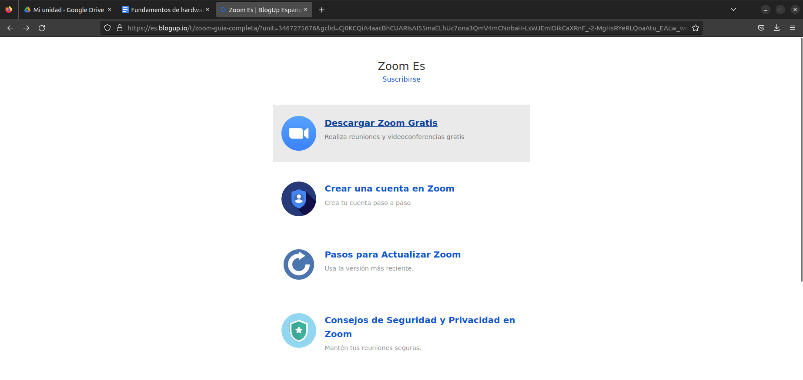
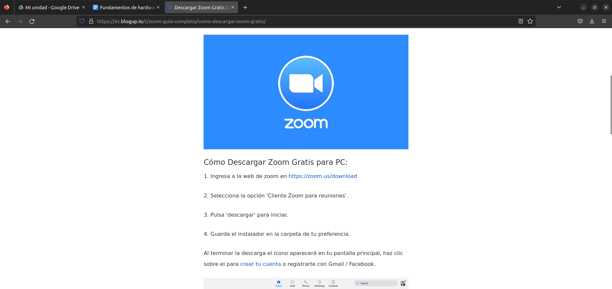
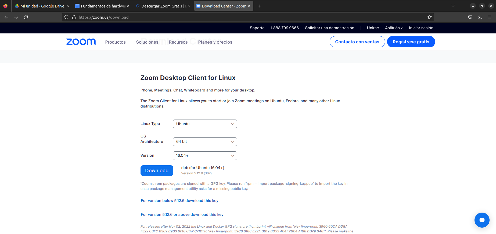
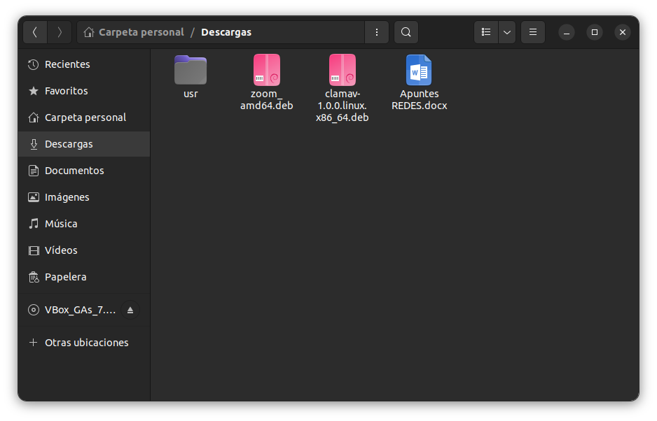
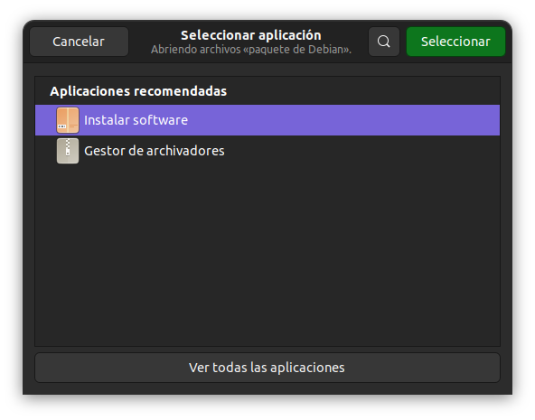
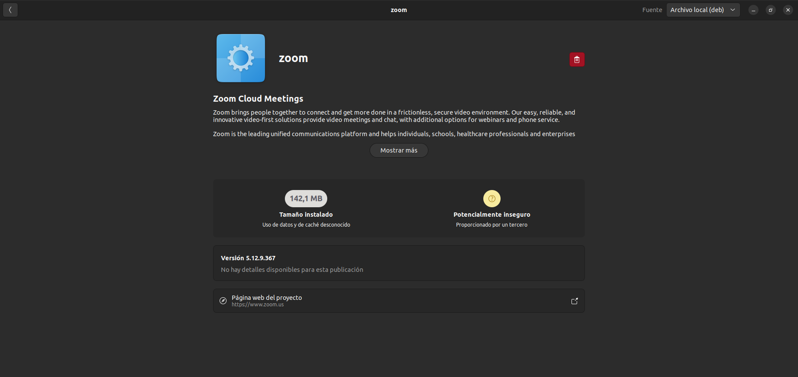

En esta página se va a presentar como se hace la instalación del Programa Portable "Zoom" en Ubuntu y sus diferentes pasos
Clickamos en el primer enlace que nos aparece. Con él accederemos a la pagina que se presenta en la siguiente foto.
Al abrir esta pagina tendremos que elegir la primera opción que dice "Descargar Zoom Gratis"
Clickamos en el enlace que nos aparece en la primera opción
A continuación elegimos nuestro Sistema Operativo y que versión vamos a descargar
Elegimos las opciones que vemos en pantalla y clickamos en "Download"
Se nos abre la pestaña que vemos en la imagen
Hacemos click derecho y elegiremos "Instalar Software"
Sale como se ve en la foto entonces es que se habrá descargado correctamente
Instalación terminada y con éxito si se han seguido los pasos citados